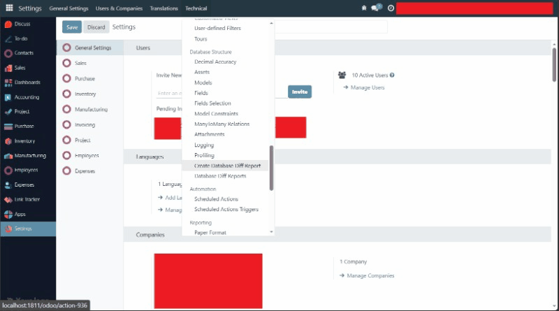
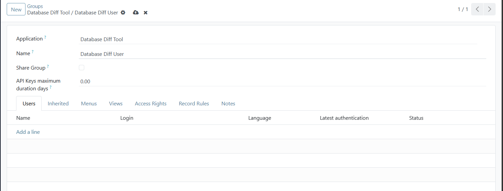
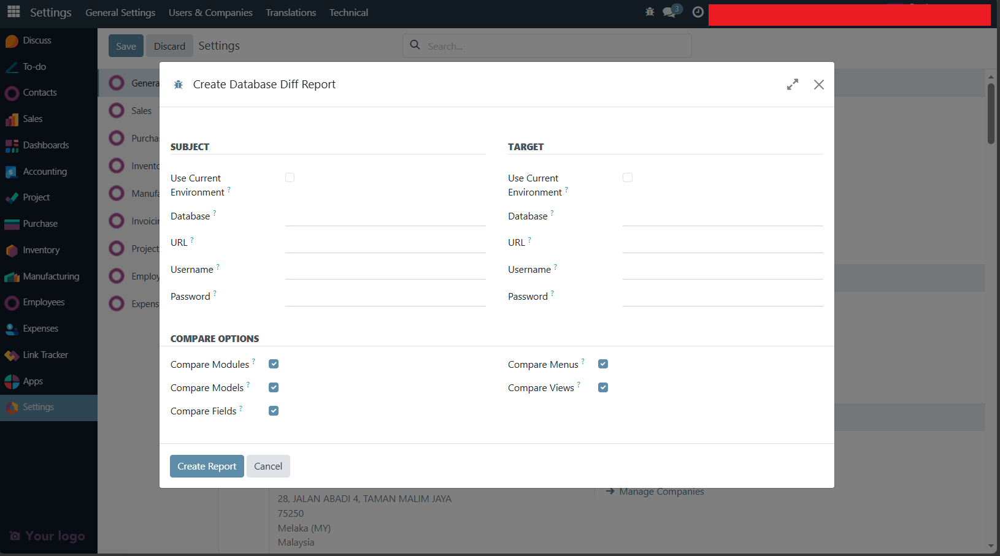
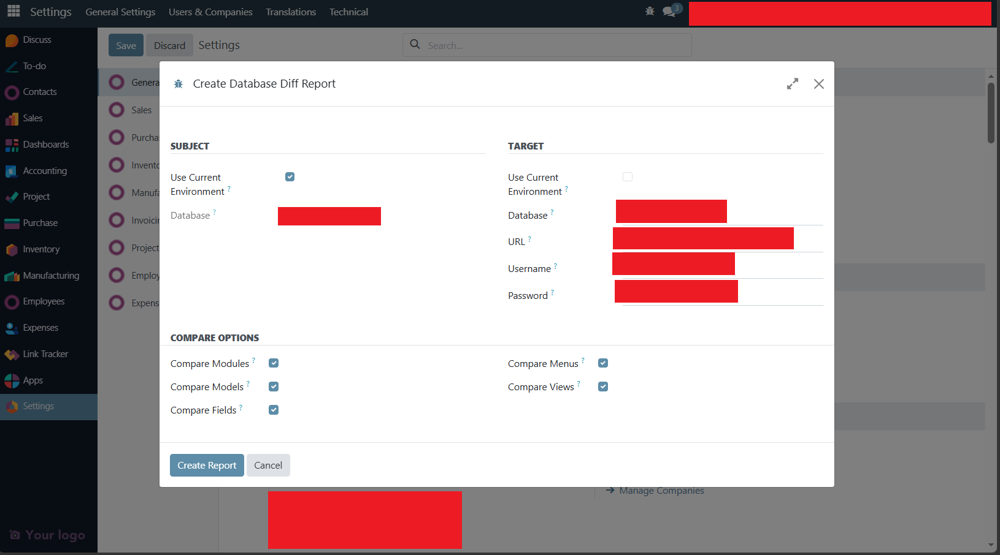
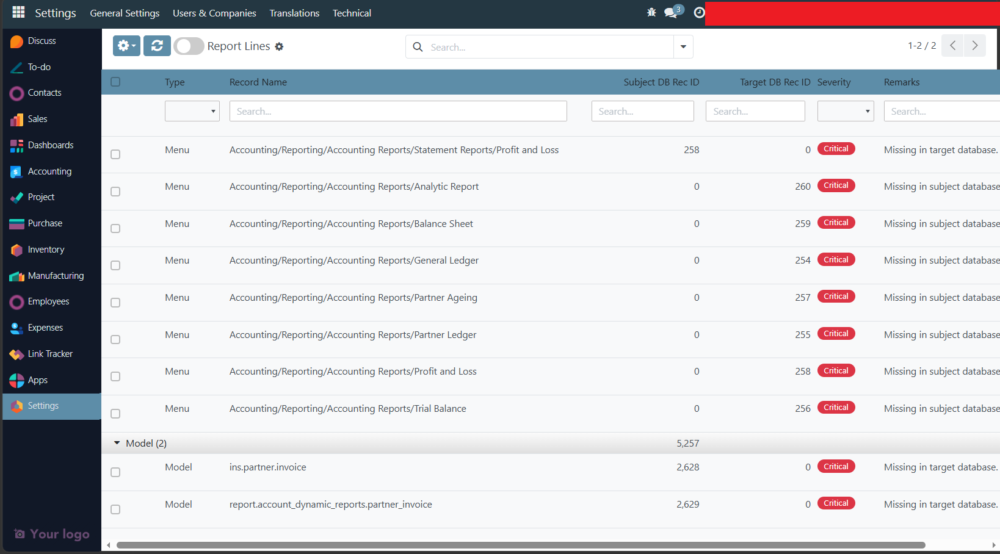
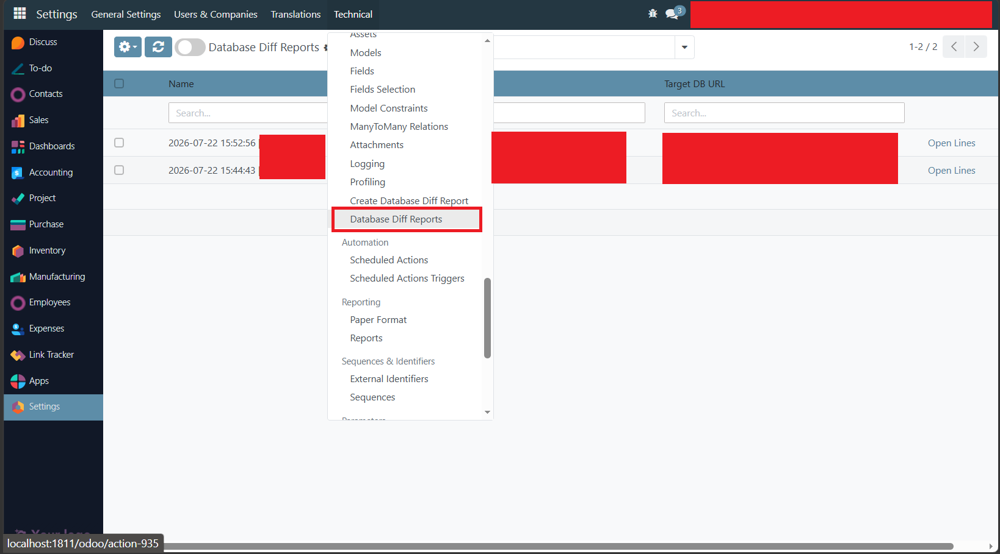
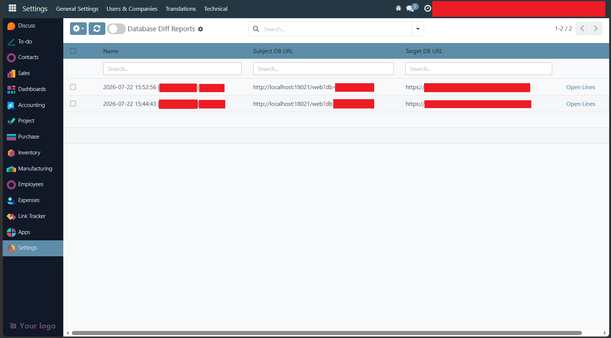
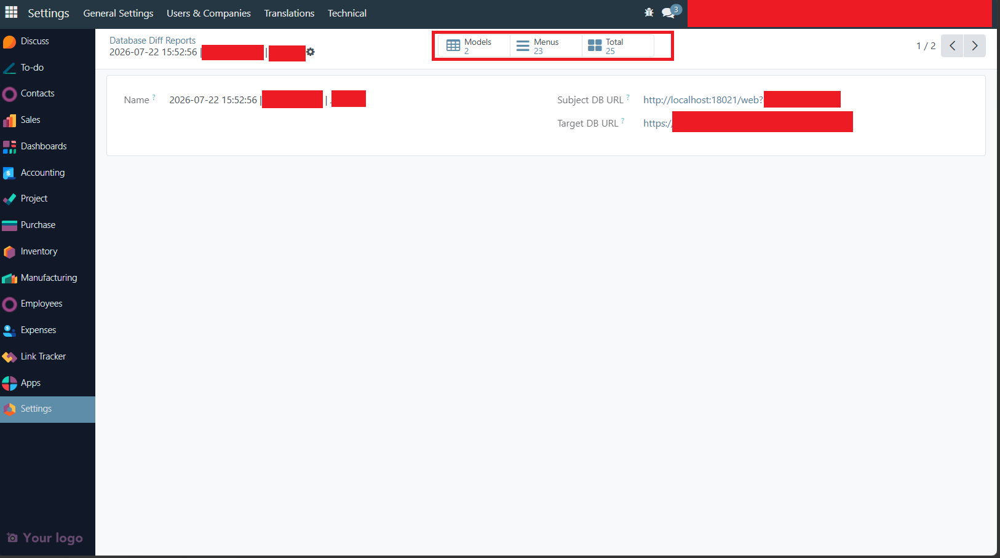

A developer utility for Odoo 18 that compares two databases and generates a stored, read-only report of every difference found in modules, models, fields, menus and views.

Keeping staging, production and development databases in sync is hard to verify by hand. Database Diff Tool connects to a "Subject" and a "Target" database - the current one, or any other reachable through XML-RPC - and produces a single report you can review, share and keep for later, without ever writing to either database.
Settings/Users & Companies/Users), active state and sequence.key or name, active state, name and whether the architecture changed (content is never displayed).The Create Database Diff Report and Database Diff Reports menus are found under Technical > Database Structure after you add your user in this group

Open Technical > Database Structure > Create Database Diff Report to start a new comparison.
The wizard lets you enter the Subject and Target database credentials and choose which comparison types to run.

Here the current database is set as Subject and an external staging database as Target.

After clicking Create Report, the report is generated and you're redirected to its lines. Each line carries one of four remarks: missing in target database, missing in subject database, duplicate key, or a table of field changes between the two databases.

All generated reports can be reviewed from Technical > Database Structure > Database Diff Reports.


Differences can be viewed for a single comparison type or for all of them at once.

Every line records the type of object, its comparison key, a severity (Info / Warning / Critical) and an HTML remark explaining exactly what changed - a difference table for changed fields, or a simple notice when a record is missing on one side. Duplicate comparison keys are flagged instead of silently compared.
A dedicated Database Diff User security group controls access to the wizard and the generated reports. Reports are read-only but can be deleted by group members; report lines cannot be deleted directly and are removed automatically when their report is deleted.